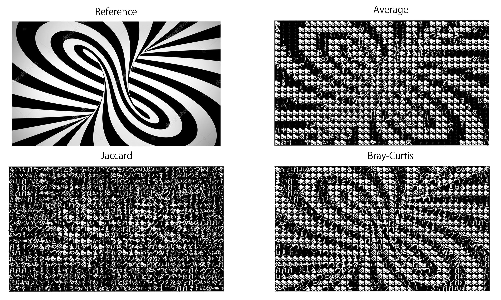
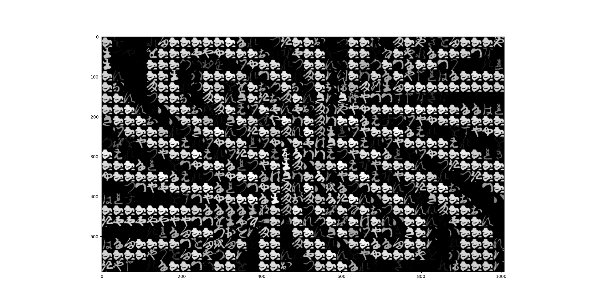

Most digital photomosaics are created by comparing average pixels of images and more efficient programs create maps or dictionaries of photo – photo average pixel value pairs. With some optimizations, this process can create mosaics fast enough to mosaic-ize videos in real-time. However, this photomosaic generator pursues more advanced mosaics with sub-tile accuracy rather than fast generations. The goal of this project is not a particular result, but rather a sense of detail within each tile. This photomosaic generator accomplishes this by calculating the Bray–Curtis dissimilarity between images. Depending on the result desired, it can also use canny edge detection to create more stylized results.
There are many ways to calculate the similarity/dissimilarity between vectors, or more specifically images. For this project only distance metrics part of the SciPy project were considered. By advice of my supervisor, first the Jaccard dissimilarity was considered.
In order initially select a metric, first the results were simply compared visually using pyplot.
This is was the baseline comparison using the difference of the mean value. 
Finally, in an attempt to improve the reuslts, the value of each tile can be scaled by the simularity to the target tile. This dramatically reduces noise in dark arrays and helps improve contrast. 
Using average values worked as expected. It performed well until the swirl lines became too small and close together to be rendered given the tile size.
The Jaccard distance performed unexpectedly bad. This will be addressed later.
The Bray-Curtis performed fairly well, maintaining the swirl even in the center. However, It is quite noisey. This can be partially remedied by scaling the pixel values by the score as shown in the last example.
As a final example, compare the results using averages vs Bray-Curtis (adjusted by score) on a photopragh.
There is clearly a great potential for improvement over the method using Bray-Curtis dissimilarity, however, it does seem to be a clear improvement over using the average in terms of detail. Notice the wood grain, and the face of the women in the background.
This a project was created in Python 3.6 and currently requires "kmnist-train-imgs.npz" from https://github.com/rois-codh/kmnist
It is also dependant on Numpy, SciPy, PIL, and matplotlib.
"KMNIST Dataset" (created by CODH), adapted from "Kuzushiji Dataset" (created by NIJL and others), doi:10.20676/00000341
Use git clone https://github.com/digitalpanda213/mosaic or download the zip from GitHub
As this project only exists in a Python script, a working Python installation is required. See https://www.python.org/ for more details about installing Python.
If feel the desire to contribute, please use Git and open a pull request.
Otherwise, I can be reached at coatesal@appstate.edu
All the contents of the repository are licensed under the CC BY-SA 4.0 license.
To run the script, use create_mosaic(Image, Dataset, NumTiles, use_canny=Boolean) where Image is the image to be turned into a mosaic, Dataset either “kkanji2-1.npz” or “kmnist-train-imgs.npz,” NumTiles is the numbers tile width-wise, and use_canny defaults to false.